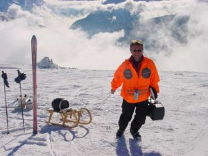

Hallo und herzlich Willkommen!

Dies ist die Homepage vom Alpenpapst, der schon viele Touren in die Alpen organisiert hat. Ihr findet hier Berichte und Bilder zu den bisherigen Touren. Also viel Spaß beim "Schneestöbern" und bis zum nächsten Mal, wenn es wieder heißt:
"Urlaub mit dem Alpenpapst beginnt am ersten Tag,
endet aber nicht am letzten!"
Übrigens: Der Alpenpapst ist auch künstlerisch aktiv, schaut einfach mal rein bei "schrott-wirkt".